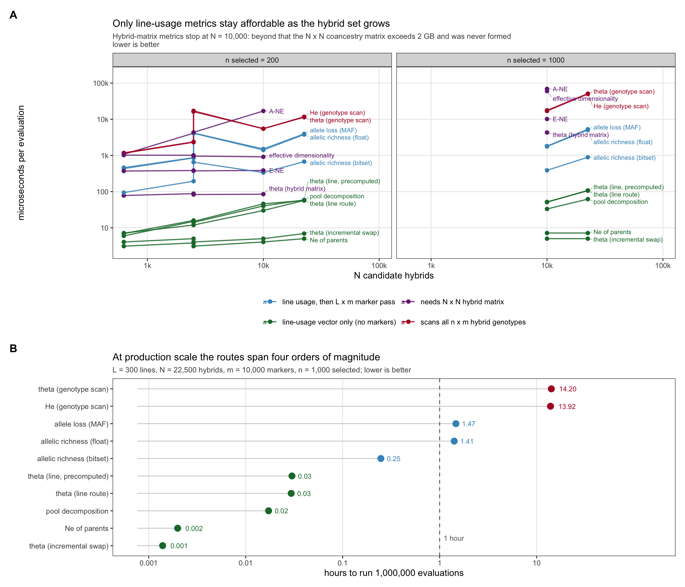
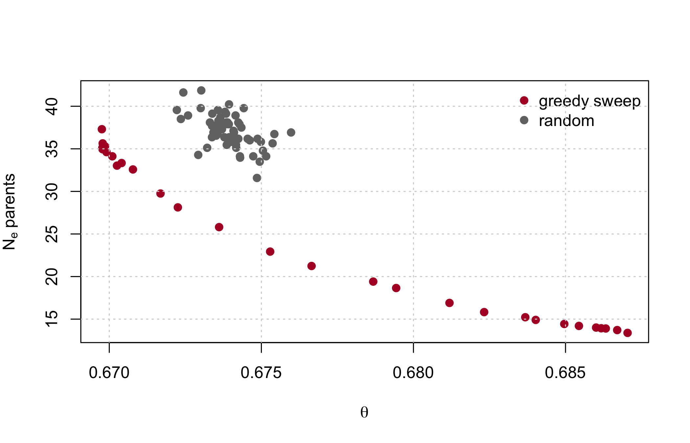
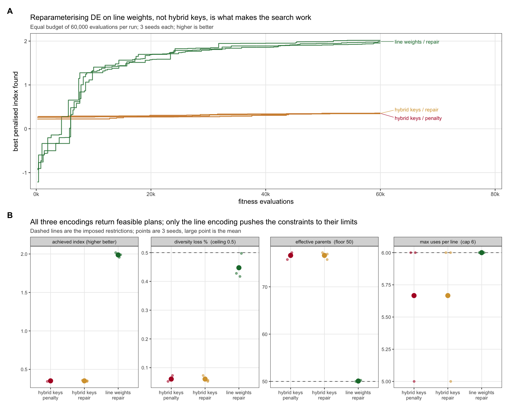

| Role | Metric | Where it runs | Cost per evaluation |
|---|---|---|---|
| Constraint | Group coancestry theta of the selected set, as proportional loss of gene diversity against a same-size resampling baseline | inside DE, every evaluation | 5 us (incremental swap) / 106 us (full line route) |
| Second constraint | Effective number of parent lines | inside DE, every evaluation | 7 us, not ordered against the swap (Section 12.2); computed from the same count vector inside make_fitness_fast() |
| Validation | Marker alleles retained (allelic richness) | on the returned plan only | 0.9 ms (bitset) |
| Validation | Within/between heterotic-pool decomposition of theta | on the returned plan only | 62 us |
| Validation | Status number Ns = 1/(2 theta), a rescaling of theta | free, algebraic | 0 |
| Monitoring | F_drift and F_hom against the random-subset null (item 6 of Section 12.6) | on the returned plan only | not timed here (post hoc, O(nm)) |
12 Choosing metrics: collapse, cost, redundancy
Chapter 11 built a catalogue. This chapter asks which of it to keep, and answers with two questions the catalogue could not: what does each metric cost per evaluation, and how much of what it reports is already in \(\theta\).
The recommendation (Table 12.1) is two metrics inside the optimiser (differential evolution, DE) and three at validation, plus one monitoring item that lies outside the analysis behind the other five (the table’s last row and Finding 3).
Five findings drive this. Finding 1 is an algebraic identity, derived in Section 12.1 and checked numerically live. Findings 2, 3 and 4 rest on cached external results (declared in the paragraph headed ‘Provenance of what is cached’ of Chapter 12), which this repository does not regenerate. Finding 5 is a live simulation.
Provenance of what is cached. cost_per_eval.csv and cost_scaling.png, theta_identity_check.csv, metric_redundancy.csv and metric_redundancy.png, de_constraints.csv and de_convergence.png come from runs whose code is not in this repository (the provenance list of the book’s front page says so). No script here regenerates them; the scripts that write other cost and identity tables write to report/ and different schemas. What this chapter does with them is arithmetic on the stored values; the numbers are not reproducible from this repository. The hardware, R version and timer of the cost benchmark are not recorded. What the files themselves record: the cost table, \(L\), \(N\), \(m\) and \(n\) in its columns; the identity table, \(L\), \(N\), \(m\), \(F_{BN}\), seed and \(n\); the redundancy table, 621 rows and no setting at all (not \(N\), \(L\), \(m\), \(n\) or \(F_{BN}\), the Balding-Nichols divergence of Appendix A); the DE table, dim, seed and the outcomes, not \(n\), NP or the iteration count.
12.1 Finding 1: the hybrid coancestry matrix is never needed
12.1.1 Derivation
Assumptions. (i) Every parent is a homozygous (inbred or doubled-haploid) line, as in A2 of Section 10.1, so a hybrid carries exactly one genome from each of its two parents. (ii) Each hybrid is one cross \(A_a \times B_b\) between a pool-A and a pool-B line, and the \(n\) selected hybrids are distinct crosses. (iii) \(\mathbf{f}^L\) is the \(L \times L\) molecular coancestry matrix of the lines (Equation 2.5): entry \(f^L_{ac} \in [0, 1]\) is the probability that an allele drawn at random from line \(a\) and one from line \(c\) are identical in state, with no base population. (iv) Group coancestry \(\theta_S\) is the mean of \(f\) over all \(n^2\) ordered pairs of the selection, diagonal included (Equation 11.1; Caballero and Toro (2002)). (v) \(\mathbf{G}^L\) is the \(L \times m\) line genotype matrix coded 0/1 (Appendix A); hybrid markers are coded 0/0.5/1.
Drawing an allele at random from hybrid \((ab)\) draws it from parent \(a\) or \(b\) with probability \(\tfrac12\) each, and likewise for \((cd)\), so
\[f_{(ab),(cd)} \;=\; \tfrac14\left(f^L_{ac} + f^L_{ad} + f^L_{bc} + f^L_{bd}\right). \tag{12.1}\]
Let the selection use line \(a\) exactly \(k_a\) times across its parental slots. Then \(\sum_a k_a = 2n\), and because each hybrid has one parent in each pool \(\sum_{a \in A} k_a = \sum_{b \in B} k_b = n\). Put \(w_a = k_a/(2n)\), so that \(\sum_a w_a = 1\) and each pool’s weights sum to \(\tfrac12\). Averaging Equation 12.1 over the \(n^2\) ordered pairs, each term \(f^L_{ac}\) appears as many times as \(k_a k_c\) counts the pairs of slots \((a, c)\), so
\[\theta_S \;=\; \frac{1}{4n^2}\sum_{a,c} k_a k_c f^L_{ac} \;=\; \mathbf{w}^{\top}\, \mathbf{f}^L \,\mathbf{w}, \tag{12.2}\]
and the selection allele frequencies collapse the same way, \(\bar{\mathbf{p}} = \mathbf{w}^{\top}\mathbf{G}^L\) (a hybrid’s marker row is the mean of its two parents’ rows, \(\mathbf{X} = \tfrac12\mathbf{B}\mathbf{G}^L\) in the notation of Appendix A, and averaging over the \(n\) hybrids gives \(\mathbf{w}^\top\mathbf{G}^L\)). The two displayed equations are the chapter’s own derivation under (i)-(iv); the quadratic form in line usage is the identity Chapter 1 asserts numerically.
12.1.2 Consequences, and where they stop
The \(N \times N\) hybrid matrix is not needed for the quantities that are functions of \(\mathbf{w}\) alone (those listed under ‘\(\mathbf{w}\) is a sufficient statistic’ in Section 12.1). Memory drops from \(O(N^2)\) to \(O(L^2)\). At \(L = 300\) lines and \(N = 22{,}500\) hybrids that matrix would occupy 3.77 GiB (\(22{,}500^2 \times 8\) bytes \(/\,2^{30}\)); in the benchmark below it was deliberately never formed, and every metric that needs it simply has no timing entry at that scale.
\(\mathbf{w}\) is a sufficient statistic for the diversity quantities, and only for them. Group coancestry, gene diversity (\(GD = 1 - \theta_S\)), status number, effective number of parents, selection allele frequencies and the heterotic-pool decomposition by usage weights (Equation 11.10) are functions of \(\mathbf{w}\) alone. One \(O(L)\) tabulation per evaluation serves all of them. Quantities that depend on which \(A\) line is paired with which \(B\) line are not functions of \(\mathbf{w}\): the hybrid-level \(GD_{WI\text{-}hyb}\) and the realised F1 heterozygosity of Chapter 11. Nor is the mean index, unless it is additive in the parents (\(u_i = u^L_a + u^L_b\), the index of Chapter 6); under dominance (Chapter 5) it is not.
Swapping one hybrid changes at most four entries of \(\mathbf{w}\). Exchanging hybrid \(h\) for \(h'\) removes two parental slots and adds two, and each changed entry is a rank-1 update of \(\mathbf{f}^L\mathbf{k}\) (theta_swap() performs four rank-1 column updates), so \(\theta\) updates in \(O(L)\) rather than \(O(L^2)\).
The diversity side of the discrete hybrid problem is optimal-contribution selection on lines under three further restrictions. The weights are integers \(k_a/(2n)\) (a lattice), each pool’s weights sum to \(\tfrac12\) (the margins), and \(\mathbf{k}\) must be realisable as the line degrees of \(n\) distinct \(A \times B\) pairs. This connects the problem to the literature on optimal-contribution selection (OCS, Chapter 15), but only as far as those three restrictions allow: continuous OCS drops all three, and the lattice makes the discrete problem combinatorial rather than the quadratic programme OCS usually solves. The equivalence is for the diversity objective and for an index additive in the parents; it is not stated beyond them.
12.1.3 Verification
A cached sweep (theta_identity_check.csv, no producer in this repository) compares each fast route with a slower route of the package. It has 12 rows (Table 12.2): \(F_{BN} \in \{0.05, 0.15, 0.35\}\), seeds 1, 2, \(n \in \{20, 100\}\), at \(L = 50\), \(N = 625\) and \(m = 1500\). Each entry is a maximum absolute deviation over replicate selections (thirty per row, as the sweep was described; the file does not record the count). The comparison targets are the package’s own slower routes (theta_group(), theta_from_freq(), he_nei(), ne_parents()); only the pool decomposition and the bitset richness are checked against the literal ref_* oracles. Two of the ten columns (max_pairwise_f, max_alleles_lost) have no producer anywhere in the repository; the identity target of regenerate.R writes the other eight, to report/.
| Identity | Worst deviation | |
|---|---|---|
| max_pairwise_f | pairwise f: hybrid vs line formula | 1.1e-16 |
| max_theta_sub_vs_line | theta: line route vs f submatrix | 2.2e-16 |
| max_theta_sub_vs_freq | theta: line route vs allele-frequency route | 1.1e-16 |
| max_pbar | selection allele frequencies | 0 (exact) |
| max_He | Nei He | 0 (exact) |
| max_Neparents | effective number of parents | 2.1e-14 |
| max_alleles_lost | allele loss at a minor allele frequency (MAF) threshold | 0 (exact) |
| max_theta_pools | pool decomposition | 1.2e-15 |
| max_swap_update | incremental swap vs full recompute | 4.4e-16 |
| bitset_vs_literal | bitset allelic richness vs literal count | 0 (exact) |
The same identity, live, on the book’s own data (Table 12.3):
Show code
ctx <- fast_ctx(simulate_data(book_cfg))
set.seed(51)
idx <- sample.int(ctx$N, 60)
via_matrix <- theta_group(idx, ctx)
via_line <- fast_theta(idx, ctx)
stopifnot(abs(via_matrix - via_line) < 1e-12)
data.frame(Route = c("hybrid matrix", "line route", "difference"),
theta = c(sprintf("%.6f", via_matrix), sprintf("%.6f", via_line),
sprintf("%.1e", via_matrix - via_line)))| Route | theta |
|---|---|
| hybrid matrix | 0.674590 |
| line route | 0.674590 |
| difference | 0.0e+00 |
And the incremental swap, which is what makes a local search affordable (Table 12.4):
Show code
st <- theta_state(idx, ctx)
out <- idx[1]; inn <- setdiff(seq_len(ctx$N), idx)[1]
st2 <- theta_swap(st, out, inn, ctx)
recomputed <- theta_group(c(idx[-1], inn), ctx)
stopifnot(abs(st2$theta - recomputed) < 1e-12)
data.frame(Route = c("incremental swap", "full recomputation", "difference"),
theta = c(sprintf("%.6f", st2$theta), sprintf("%.6f", recomputed),
sprintf("%.1e", st2$theta - recomputed)))| Route | theta |
|---|---|
| incremental swap | 0.674723 |
| full recomputation | 0.674723 |
| difference | 2.2e-16 |
WarningTwo implementation traps found while building this
R’s $ performs partial matching on lists, so ctx$f silently returns ctx$fL when the hybrid matrix is absent – a wrong answer with no error. Every accessor in the package uses ctx[["f"]]. Any pipeline carrying both matrices in one list is exposed to this.
R integers are signed 32-bit, so bitwShiftL(1L, 31L) is NA and the usual multiply-based popcount overflows. The bitset in pack_lines() packs 31 bits per word, and popcount32() counts them with a branch-free SWAR (SIMD within a register) routine.
12.2 Finding 2: what each metric costs
Figure 12.1 shows how the cost of each route scales and Table 12.5 gives its values at the benchmark scale.

Throughout this chapter the benchmark scale is \(L = 300\) lines, \(N = 22{,}500\) hybrids, \(m = 10{,}000\) markers and \(n = 1{,}000\) selected. It is not the 71 + 71 lines and 25,000 markers of the programme of Section 10.1, nor the teaching scale (25 + 25 lines, 2,000 markers) that the live chunks run. Timings are one machine’s, undeclared.
| metric | us per evaluation | hours per 1e6 evals |
|---|---|---|
| theta: incremental swap | 5.0 | 0.0014 |
| Ne_parents | 7.2 | 0.0020 |
| pool decomposition | 62.0 | 0.0172 |
| theta: LINE route | 106.1 | 0.0295 |
| theta: line route precomp | 108.0 | 0.0300 |
| allelic richness: bitset | 891.9 | 0.2478 |
| allelic richness: float | 5091.0 | 1.4142 |
| allele loss (MAF thr) | 5296.9 | 1.4714 |
| He / gene diversity(freq) | 50096.0 | 13.9156 |
| theta: allele-freq route | 51113.1 | 14.1981 |
Four readings of that table, each from the cached values:
- The genotype-scan route is disqualified. Computing \(\theta\) from selection allele frequencies costs 14.2 hours per million evaluations. The line route costs 106 us – a 482x reduction for an algebraically identical number.
- The incremental swap is effectively free at 5 us, which is about 5 seconds per million evaluations (the cached timings are multiples of about 1 us, so one significant figure is all they carry). \(N_{e,\text{par}}\) at 7 us is of the same order. At \(n = 200\) the same file gives 7 us for the swap and 5 us for \(N_{e,\text{par}}\), so the two are not ordered. Inside
make_fitness_fast()the count vector is tabulated once and serves both;fast_ne_parents()called alone tabulates it again. - Allelic richness cannot go inside the loop, and need not. The bitset implementation is 5.7x faster than the floating-point version (5.1 ms), at 892 us. That is 8.4x the cost of the line-route \(\theta\) and 178x that of the incremental swap, the evaluation a local search actually pays. It belongs at validation because adding it would make every evaluation several times dearer than the line route alone, not because it is infeasible.
- The line route is cheaper than the matrix route only when \(n\) is large. Chapter 11 priced the matrix route and this chapter’s collapse was expected to make it cheaper still. The cached values say so for large \(n\) and not for small: at \(N = 2{,}500\), \(n = 50\) the matrix route takes 6.9 us and the line route 10.0 us (the line route is slower); at \(N = 10{,}000\), \(n = 1{,}000\) they take 4313 us and 52 us. At \(N = 22{,}500\) only the line route exists.
At the teaching scale every route is affordable, so the comparison there is about ratios, not feasibility. The live table below (Table 12.6) times the package’s own functions with cost_per_eval(): a seeded selection, and repetitions multiplied by 4 until the timed block lasts 0.2 s, so a few-microsecond call is not quantised by the clock. It has no line-route, swap or bitset row (those functions are not in cost_per_eval()), and its values are wall-clock times of this machine at this render, not the cached production values. It shows that every listed route is cheap at this scale.
Show code
fmt(cost_per_eval(ctx, n_sel = 60, reps = 40), 1)| metric | us_per_eval |
|---|---|
| theta_group | 10.1 |
| theta_from_freq | 204.3 |
| ne_parents | 3.9 |
| alleles_lost | 209.0 |
| ENE | 75.1 |
| ANE | 618.7 |
| eff_dim | 145.7 |
| Gst | 2050.0 |
12.3 Finding 3: within one lens, the metric space is nearly one-dimensional
Assumptions and scope of this analysis. It reads metric_redundancy.csv (Figure 12.2), a cached external result with no producer here and no recorded setting (the number of lines, hybrids, markers, \(n\) and \(F_{BN}\) are not in the file; the previous version of this chapter gave \(F_{BN} = 0.15\) and 12,000 markers, and I cannot check either against the file). Every row has alleles retained plus alleles fixed equal to 12,000, so I read 12,000 as \(2m\) alleles of \(m = 6{,}000\) biallelic markers, an inference. For the same reason the column alleles_retained is identified with Equation 11.7 by inference: it is consistent with it (values within \([m, 2m]\) for that \(m\)), but the producer is not available to confirm the definition or the set of lines it was computed on. Three things bound what it can say.
- One lens. All columns are homozygosity-lens quantities, functions of \(\mathbf{f}\), the pedigree or the line usage. \(F_{drift}\) and \(F_{hom}\)
- are not among them, so “redundant with \(\theta\)” means redundant inside that lens, and nothing is said about the drift lens.
- A mix of strategies. The 621 selections are 300 random, 120 truncation, 113 restricted-line-pool, 88 greedy (the greedy ones are 11 index weights
wfrom 0 to 1, eight selections each). Rank correlations, retained fractions and principal-component analysis (PCA) shares are properties of this mix, not of any one strategy: \(\rho(\theta, N_{e,\text{par}})\) is -0.6 within the random selections and -0.95 within truncation, against -0.925 over all of them. - The
eff_dimcolumn is not the package’seff_dim(). Its mean is 1.486 (range 1.438 to 1.506), of the order of the uncentred participation ratio of Chapter 11 (1.47 on that chapter’s subset) and nowhere near the double-centred value the package computes (26.19 there). The file does not say which form it holds; I read it as the uncentred ratio. An uncentred ratio re-measures \(\theta\) by construction (Rayleigh bound, Chapter 11), so the redundancy ofeff_dimbelow is a statement about that form and is not evidence about the package’seff_dim(), which is the one timed in Finding 2. The same file does not record which definition of A-NE it used (Chapter 11 keeps a nonzero self-distance).

PC1 absorbs 87.6% of the rank variance of the 16 diversity columns, PC2 6.6%. (The 17th column of the file, mean_index, is the objective and is left out. The 16 include four exact rescalings of \(\theta\): gene diversity, Nei’s \(H_e\), loss_pct and status number all have \(|\rho| = 1\). Without those four copies the shares are 85.4% and 7.5%.) Rank correlations with \(\theta\) over the whole mix are 0.967 for eff_dim (uncentred form, item 3 of the scope paragraph above), 0.932 for allele loss at a minor allele frequency (MAF) threshold and 0.925 for \(N_{e,\text{par}}\).
But the marginal correlation is the wrong test. The question is whether a metric varies at fixed \(\theta\) – because \(\theta\) is the constraint, and any metric that is a deterministic function of it cannot discriminate among plans the optimiser treats as equivalent. The residual test: regress the ranks of each metric on the rank of \(\theta\) and its square, and report the standard deviation of the residual as a fraction of the standard deviation of the ranks (Table 12.7; a fraction of 0.52 corresponds to \(R^2 \approx 0.73\)).
| metric | residual fraction | Spearman rho |
|---|---|---|
| theta_between | 0.653 | 0.758 |
| A_NE | 0.556 | 0.820 |
| E_NE | 0.523 | -0.837 |
| alleles_retained | 0.521 | -0.845 |
| n_lines_used | 0.503 | -0.860 |
| theta_within_B | 0.391 | 0.917 |
| theta_within_A | 0.373 | 0.922 |
| Ne_parents | 0.364 | -0.925 |
| alleles_lost_MAF | 0.352 | 0.932 |
| eff_dim | 0.250 | -0.967 |
- 9 of the 10 metrics in the table keep at least 0.35 of their rank standard deviation after \(\theta\): between-pool coancestry
theta_between(0.65), A-NE (0.56), E-NE (0.52), alleles retained (0.52), the number of lines used (0.5), and then the two within-pool coancestries (0.37, 0.39), \(N_{e,\text{par}}\) (0.36) and MAF-threshold allele loss (0.35). Allelic richness is therefore one of several metrics that vary at fixed \(\theta\), not the only one, and \(N_{e,\text{par}}\) and MAF allele loss retain about the same amount. The uncentredeff_dimretains 0.25. - Inside the band \(|\theta - \text{median}(\theta)| < 0.002\) (that is \(\theta \in [0.6661, 0.6701]\)), which holds 399 selections of which 293 are random, alleles retained spans 171 alleles (11680 to 11851 of 12,000) and \(N_{e,\text{par}}\) spans 30.1 to 55.8.
Plans the constraint cannot distinguish differ in how many alleles they carry forward and in how concentrated their parentage is. That is the empirical case for tracking something beside \(\theta\). It does not choose among the metrics that keep variation: the residual fraction measures departure from a smooth function of \(\theta\) in this sample, not relevance to a breeding objective, so it is a necessary condition for a validation metric and not a sufficient one. Within the random selections alone, \(\rho(\theta, \text{alleles retained})\) is -0.35, so a good part of the correlation over the whole mix comes from the strategies differing from one another.
12.3.1 Reproducing the argument at the teaching scale
The chunk below (Figure 12.3) does the Ne_par half of the argument live, at the teaching scale and with the same band rule. It does not compute allelic richness.
Show code
set.seed(77)
# index weights on a log grid: the greedy score w * u - theta switches from pure
# diversity to near-truncation between w = 1e-5 and w = 1e-2 at this scale (a
# linear grid on 0 to 4 returns only two distinct selections)
gsel <- lapply(c(0, 10^seq(-5, -2, length.out = 29)), function(w) sort(sel_greedy(ctx, 60, w = w)))
gw <- c(0, 10^seq(-5, -2, length.out = 29))
keep <- !duplicated(gsel) # different weights can return the same selection
n_distinct_greedy <- sum(keep)
grid <- do.call(rbind, lapply(which(keep), function(i)
data.frame(w = gw[i], theta = theta_group(gsel[[i]], ctx), Ne_par = ne_parents(gsel[[i]], ctx))))
rnd <- do.call(rbind, lapply(1:60, function(i) {
s <- sample.int(ctx$N, 60)
data.frame(w = NA, theta = theta_group(s, ctx), Ne_par = ne_parents(s, ctx))
}))
pts <- rbind(grid, rnd)
plot(pts$theta, pts$Ne_par, pch = 19, col = ifelse(is.na(pts$w), book_pal[["mid"]], book_pal[["loss"]]),
xlab = expression(theta), ylab = expression(N[e]~"parents"))
legend("topright", c("greedy sweep", "random"), pch = 19,
col = c(book_pal[["loss"]], book_pal[["mid"]]), bty = "n")
grid()
ne-par-band.
Here w is the index weight of the greedy score \(w\,u_i - \theta\) (the \(\omega\) of Appendix A, written w in Chapter 16), not the line-usage vector \(\mathbf{w}\) of Finding 1: w = 0 is pure diversity and larger values weigh the index more.
Table 12.8 gives the band.
Show code
band <- pts[abs(pts$theta - median(pts$theta)) < 0.002, ]
fmt(data.frame(n_in_band = nrow(band),
theta_span = diff(range(band$theta)),
Ne_par_min = min(band$Ne_par), Ne_par_max = max(band$Ne_par),
Ne_par_ratio = max(band$Ne_par) / min(band$Ne_par)), 4)| n_in_band | theta_span | Ne_par_min | Ne_par_max | Ne_par_ratio |
|---|---|---|---|---|
| 62 | 0.0032 | 22.9299 | 41.8605 | 1.8256 |
The 30 index weights return 28 distinct greedy selections (the rest repeat another weight’s selection and are counted once). At the teaching scale, among the 62 distinct selections in the band (greedy and random together), \(N_{e,\text{par}}\) varies by a factor of 1.83, against 1.85 in the cached analysis. The two factors are not comparable: the selections of the two analyses come from different strategy mixes, different sizes and different numbers of selections. One seed, one scale: the factor is not an estimate.
NoteA caveat on transfer
These numbers come from one simulation of two pools, setting undeclared in the file, and the residual fractions are properties of the strategy mix above. The direction of the conclusion – several metrics vary at fixed \(\theta\), allelic richness among them – is what the file supports; the exact fractions will shift with pool divergence \(F_{BN}\), marker density and the mix of strategies. Re-running the redundancy analysis on real genotypes, with the package’s own eff_dim(), is a half-hour job and worth doing before treating the recommendation as final.
12.4 Finding 4: searching on line weights, a preview of Chapter 16
This finding uses differential evolution (DE), a penalty or a repair step for violated restrictions, the per-line usage cap max_use (the largest number of times one line may be a parent) and a decoder that turns a weight vector into a selection. They are introduced in Chapter 16 and Chapter 17, which come later; read this finding as a preview and take the full treatment, with its qualifiers, from there.
What was run (cached, external). de_constraints.csv (Figure 12.4, Table 12.9) holds differential evolution runs through make_fitness_fast() with no producer in this repository. Its dim column is 3600 and 120: one random key per hybrid (\(N = 3{,}600\) hybrids, from \(L = 120\) lines as Chapter 16 states) or one weight per line. Four simultaneous restrictions, defined in Section 16.3.2: diversity loss \(\le 0.5\%\), \(N_{e,\text{par}} \ge 50\), at most 6 uses per line, and heterotic-pool balance within 5%. Budget 60,000 evaluations per run, three seeds per configuration. Not recorded: the number selected \(n\), the DE population size NP, the iteration count. Neither arm is sel_de(), and neither is warm-started: in the cached convergence figure both begin from random keys or weights (the line-weight curves start at about \(-1\) and the hybrid-key curves at about 0.27 on the penalised index).

| encoding | index | loss % | Ne parents | max uses | pool imbalance | seconds |
|---|---|---|---|---|---|---|
| hybrid keys / penalty | 0.351 | 0.060 | 76.634 | 5.667 | 0 | 6.550 |
| hybrid keys / repair | 0.351 | 0.060 | 76.634 | 5.667 | 0 | 9.621 |
| line weights / repair | 1.988 | 0.448 | 50.084 | 6.000 | 0 | 12.126 |
Result. At the same evaluation budget the search with one key per hybrid reaches a mean index of 0.351 (seed range 0.343 to 0.358) and the search with one weight per line 1.988 (1.956 to 2.017); the difference is 1.64 index units, and the seed ranges do not overlap. (A ratio of the two is not quoted: the index has no natural zero here, and the hybrid arm starts above the line arm on the penalised scale.) In the hybrid arm \(N_{e,\text{par}}\) is 75.8 to 77.2 against a floor of 50 and loss is 0.05 to 0.07% against a ceiling of 0.5%: both slack. The maximum number of uses is 5, 6, 6 against a cap of 6, so the cap is reached in 2 of the 3 seeds. In the line arm \(N_{e,\text{par}}\) is 50 to 50.25, the maximum number of uses is 6 in every seed, and loss is 0.42 to 0.5%. Pool imbalance is 0 in all 9 rows: that restriction is slack in every configuration, so the “four simultaneous restrictions” bind on two of four at most (the line arm’s \(N_{e,\text{par}}\) and uses per line). Penalty and repair returned numerically identical plans in the hybrid arm for all three seeds; no line-weight arm with a penalty was run.
Interpretation, and what limits it. Feasible plans with index 1.99 exist for this problem (the line-arm plans), so the hybrid-arm plans at 0.35 with slack constraints are not constrained optima: a slack constraint at the end of a run is here the sign of an unconverged search, not of a conservative plan. This follows from the table; it is not a general rule. Three limits apply. (a) The comparison is between two encodings through the same fitness, not between two constraint handlers: the handlers were compared only in the hybrid arm, where they returned the same plans, and I do not know why (one reading is that the hybrid search stayed far from the boundary; it was not tested). The line decoder satisfies the cap by construction (Chapter 16), so “uses per line = 6” in the line arm is not evidence that the search found the boundary. (b) Neither arm is sel_de(), and the benchmark of Chapter 17 (search_benchmark.csv, regenerated in this repository; \(N = 625\), \(L = 50\), \(n = 60\), cap 5 uses per line at its book scale; \(N = 10{,}000\), \(L = 200\), \(n = 200\), cap 4 at its production scale; Finding 4’s cap is 6) does not settle which of the two is ahead in this finding’s setting. It has 3 seeds per method and scale. On its uncapped rows sel_de() (de_hybrid) has a mean index of 1.36 (sd 0.018) against 1.059 (sd 0.015) for line-encoded DE (de_lines) at the book scale, a difference of 0.3 with standard error 0.013; at the production scale 1.446 (sd 0.018) against 1.336 (sd 0.067), a difference of 0.11 with standard error 0.04, which three seeds do not resolve. On its capped rows, the setting of this finding (a cap on uses per line, a decoder that satisfies it by construction), the means are 1.1097 (de_hybrid_cap) against 1.1056 (de_lines_cap) at the book scale, a difference of 0.0041, and 1.1223 against 1.1223 at the production scale, a difference of 0, with a seed standard deviation of 0 in every capped cell; why the seeds agree exactly was not examined. At the book scale the gap is therefore the same in every seed and no standard error exists to judge it by; at the production scale the two arms are equal. The cached benchmark therefore supports “sel_de() ahead of line-encoded DE” only without a cap, and resolved only at the book scale; with a cap it shows an unjudged gap of 0.0041 at the book scale and none at the production scale. The result above is a verdict on the \(N\)-dimensional key encoding, not on sel_de(). (c) Three seeds, one setup, no interval. The search effort also differs in kind: with NP at least ten times the number of parameters, the guidance of the DEoptim.control help page (the package is described by Mullen et al. (2011)), 3,600 parameters call for 36,000 population members, so 60,000 evaluations are fewer than two generations; at 120 parameters 1,200 members give about 50 generations. The NP of the cached run was not recorded, so I cannot say that either arm followed that guidance. An earlier version of this finding quoted an unconstrained truncation index, a diversity loss, an effective number of parents and a count of uses for a comparison point, and a percentage of that index recovered; none is in any file or script of this repository, the selection size of that run is unknown, and an unconstrained plan is not the fair comparator for a capped search. They are withdrawn.
12.5 Finding 5: the index is not the truth, and its error is not white
Findings 1 to 4 are about the diversity side of the objective. This one is about the other side, and it is the larger uncertainty of the two.
Everywhere in this book ctx$index is built from known marker effects (Chapter 6), so every result so far assumes the breeding values are predicted without error. Real ones are not, and the error is not white noise: predictions for close relatives are wrong in the same direction, because they lean on the same training records and share the same haplotypes. The book already has a matrix of exactly that structure – the molecular coancestry \(\mathbf{f}\) – so the error can be simulated without inventing anything. (Chapter 14 fits an actual genomic BLUP (GBLUP) model later and reports, in one simulation, a positive correlation of the products of its prediction errors with \(\mathbf f\) against a permutation reference (not a formal test, and not compared with this generator). Its realised accuracies are against one trait, not the three-trait index used here, so the comparison is of orders of magnitude only: CV2 has a mean of about 0.9, at the lower edge of the 0.9 to 1 values explored here (Table 14.3), and CV1 between 0.5 and 0.7.)
Assumptions. Teaching scale (25 + 25 lines, 2,000 markers, \(N = 625\) hybrids), \(n = 60\) selected, index \(u_i\) the true additive index of the simulation. The prediction is \(\hat u = \text{scale}(r\,u + \sqrt{1 - r^2}\,e)\) with \(e\) a standardised error vector, either \(\mathbf{T}\mathbf{z}\) with \(\mathbf{T}\mathbf{T}^\top = \mathbf{f} + 10^{-8}\mathbf{I}\), \(\mathbf{T}\) the lower-triangular Cholesky factor (error correlated with relatedness) or \(\mathbf{z}\) (independent), \(\mathbf{z} \sim N(0, \mathbf{I})\); both kinds are run and every table says which it uses (kind, default "correlated" in predicted()). The \(r\) is a nominal accuracy: \(e\) is not orthogonalised against \(u\), so the realised correlation of \(\hat u\) with \(u\) differs from \(r\) in every seed (its mean and spread by kind are reported below). Unit of replication: the seed of \(\mathbf{z}\), twenty seeds for the accuracy table and sixty for the comparison of the two kinds of error, each set inside predicted(). The diversity loss \(\alpha\) is measured against gd_ref of a resampling null with \(B = 400\) (null_distribution(), its own seed 7).
Show code
n_sel <- 60
null <- null_distribution(ctx, n_sel, B = 400, B_full = 60)
gd <- null$gd_ref
u <- ctx$index
Lc <- t(chol(ctx[["f"]] + diag(1e-8, ctx$N)))
# A predicted index at nominal accuracy r. `kind` decides whether the error is
# correlated with relatedness or independent between hybrids.
predicted <- function(r, seed, kind = "correlated") {
set.seed(seed)
z <- rnorm(ctx$N)
e <- if (kind == "correlated") as.numeric(Lc %*% z) else z
e <- (e - mean(e)) / stats::sd(e)
as.numeric(scale(r * u + sqrt(1 - r^2) * e))
}Select on the prediction, then score the plan on the truth, over twenty seeds per accuracy and per kind of error (Table 12.10 reports both kinds; the two coincide at \(r = 1\), where the prediction is the truth):
Show code
run <- function(r, seed = 1, kind = "correlated") {
ch <- ctx; ch$index <- predicted(r, seed, kind)
sel <- list(truncation = sel_truncation(ch, n_sel),
greedy = sel_greedy(ch, n_sel, w = 3e-4))
do.call(rbind, lapply(names(sel), function(nm) data.frame(
method = nm, kind = kind, r = r, r_real = cor(ch$index, u),
reported = mean(ch$index[sel[[nm]]]),
realised = mean(u[sel[[nm]]]),
alpha = alpha_loss(sel[[nm]], ctx, gd))))
}
kinds <- c("correlated", "independent")
acc_all <- do.call(rbind, lapply(kinds, function(k)
do.call(rbind, lapply(c(1, 0.9, 0.7, 0.5), function(r)
do.call(rbind, lapply(1:20, function(s) cbind(seed = s, run(r, s, k))))))))
se <- function(x) sd(x) / sqrt(length(x))
acc <- aggregate(cbind(r_real, reported, realised, alpha) ~ method + kind + r, acc_all, mean)
acc_se <- aggregate(cbind(reported, realised, alpha) ~ method + kind + r, acc_all, se)
acc$`s.e. realised` <- acc_se$realised
acc$`s.e. alpha` <- acc_se$alpha
fmt(acc[order(acc$method, acc$kind, -acc$r), ], 4)| method | kind | r | r_real | reported | realised | alpha | s.e. realised | s.e. alpha | |
|---|---|---|---|---|---|---|---|---|---|
| 13 | greedy | correlated | 1.0 | 1.0000 | 1.5893 | 1.5893 | 0.0133 | 0.0000 | 0.0000 |
| 9 | greedy | correlated | 0.9 | 0.8950 | 1.5061 | 1.4203 | 0.0114 | 0.0080 | 0.0004 |
| 5 | greedy | correlated | 0.7 | 0.6721 | 1.4175 | 1.0843 | 0.0102 | 0.0241 | 0.0004 |
| 1 | greedy | correlated | 0.5 | 0.4488 | 1.3532 | 0.7141 | 0.0092 | 0.0329 | 0.0005 |
| 15 | greedy | independent | 1.0 | 1.0000 | 1.5893 | 1.5893 | 0.0133 | 0.0000 | 0.0000 |
| 11 | greedy | independent | 0.9 | 0.8998 | 1.5676 | 1.2235 | 0.0022 | 0.0106 | 0.0002 |
| 7 | greedy | independent | 0.7 | 0.6988 | 1.6035 | 0.8924 | -0.0035 | 0.0117 | 0.0002 |
| 3 | greedy | independent | 0.5 | 0.4979 | 1.6171 | 0.6255 | -0.0066 | 0.0185 | 0.0003 |
| 14 | truncation | correlated | 1.0 | 1.0000 | 1.9919 | 1.9919 | 0.0412 | 0.0000 | 0.0000 |
| 10 | truncation | correlated | 0.9 | 0.8950 | 1.9268 | 1.8292 | 0.0416 | 0.0146 | 0.0012 |
| 6 | truncation | correlated | 0.7 | 0.6721 | 1.8244 | 1.4145 | 0.0396 | 0.0408 | 0.0010 |
| 2 | truncation | correlated | 0.5 | 0.4488 | 1.7734 | 0.9163 | 0.0379 | 0.0546 | 0.0011 |
| 16 | truncation | independent | 1.0 | 1.0000 | 1.9919 | 1.9919 | 0.0412 | 0.0000 | 0.0000 |
| 12 | truncation | independent | 0.9 | 0.8998 | 1.9262 | 1.8444 | 0.0338 | 0.0053 | 0.0005 |
| 8 | truncation | independent | 0.7 | 0.6988 | 1.8398 | 1.4381 | 0.0183 | 0.0183 | 0.0007 |
| 4 | truncation | independent | 0.5 | 0.4979 | 1.7957 | 1.0044 | 0.0075 | 0.0233 | 0.0007 |
(Mean over twenty seeds, with the standard error over seeds. At \(r = 1\) the prediction is the truth and does not depend on the seed, so its standard error is zero.)
Show code
# in how many seeds is alpha non-decreasing in r, i.e. falls as accuracy falls?
mono <- sapply(kinds, function(k) vapply(c("truncation", "greedy"), function(m)
sum(vapply(1:20, function(s) {
a <- acc_all[acc_all$method == m & acc_all$kind == k & acc_all$seed == s, ]
!is.unsorted(a$alpha[order(a$r)])
}, logical(1))), numeric(1)))
mono
# paired contrast r = 1 vs r = 0.5 within seed, truncation: difference of alpha
# (r = 1 minus r = 0.5), its mean, standard error and the ratio of the two
pc <- t(sapply(kinds, function(k) {
a <- acc_all[acc_all$method == "truncation" & acc_all$kind == k, ]
d <- a$alpha[a$r == 1][match(1:20, a$seed[a$r == 1])] -
a$alpha[a$r == 0.5][match(1:20, a$seed[a$r == 0.5])]
c(mean = mean(d), se = se(d), ratio = mean(d) / se(d), n_positive = sum(d > 0))
}))
pc
acc_get <- function(k, r, v) acc[[v]][acc$method == "truncation" & acc$kind == k & acc$r == r]
acc_gr <- function(k, r, v) acc[[v]][acc$method == "greedy" & acc$kind == k & acc$r == r]Two things are read from this. First, the gap between reported and realised opens up: at nominal \(r = 0.5\) and correlated error truncation reports an index of 1.77 and delivers 0.92 (seed mean; realised accuracy 0.45; with independent error 1.8, 1 and 0.5). Selection on a noisy value selects partly on the noise, so the plan’s own scorecard is biased upward; nothing in the pipeline can detect this without the truth.
Second, the behaviour of \(\alpha\) with accuracy depends on the kind of error, and the sentence “\(\alpha\) moves little with accuracy” holds for correlated error only. For truncation under correlated error \(\alpha\) is 4.12, 4.16, 3.96 and 3.79% at \(r = 1, 0.9, 0.7, 0.5\); under independent error it is 4.12, 3.38, 1.83 and 0.75%. The paired difference \(\alpha(r = 1) - \alpha(r = 0.5)\) within seed, truncation, has mean 0.33 percentage points under correlated error (standard error 0.11, about 2.9 standard errors, positive in 16 of 20 seeds) and 3.38 under independent error (standard error 0.07, about 47 standard errors, positive in 20 of 20). The yardstick for the difference is its standard error, not the seed-to-seed standard deviation of a single \(\alpha\). Under correlated error the decline is small, 8% of the loss at \(r = 1\), but it is not indistinguishable from zero at this number of seeds; the paired contrast has not been tested at other accuracies. The count of seeds in which \(\alpha\) is non-decreasing in \(r\) is 4 of 20 for truncation and 10 of 20 for greedy under correlated error, and 20 and 20 under independent error. One reading of the independent-error fall is that noisy selection is closer to random selection, which \(GD_{\text{ref}}\) is defined against; that mechanism was not tested here. Greedy (index weight \(3 \times 10^{-4}\)) behaves differently under independent error: \(\alpha\) falls from 1.33% at \(r = 1\) to -0.66% at \(r = 0.5\) (standard error over seeds 0.03), and this value is negative, that is, the plan is more diverse than the random-subset baseline \(GD_{\text{ref}}\) (sign convention of Appendix A). The fall is monotone in \(r\) in 20 of 20 seeds, whereas under correlated error \(\alpha\) stays positive (0.92% at \(r = 0.5\)). The reading offered for truncation, noisy selection being closer to random selection, cannot account for a value below random. A reading consistent with the data, not tested here (for example by varying the index weight), is that greedy penalises \(\theta\) directly, so that when the error carries no information on relatedness the index term no longer pulls the plan toward related hybrids and the penalty dominates. Selection at the teaching scale on \(n = 60\) of \(N = 625\) is the only scale measured, and the diversity loss of a plan on a noisy index therefore cannot be inferred from the accuracy alone: it depends on how the error is distributed over relatives.
12.5.1 The correlation structure of the error matters
Hold the nominal accuracy at \(r = 0.6\) and change only whether the error is correlated with relatedness, over sixty seeds, comparing the two kinds within each seed (Table 12.11; sixty rather than twenty because the realised-gain difference below was unstable over blocks of twenty):
Show code
cmp <- do.call(rbind, lapply(c("correlated", "independent"), function(k)
do.call(rbind, lapply(1:60, function(s) {
ch <- ctx; ch$index <- predicted(0.6, s, k)
tr <- sel_truncation(ch, n_sel)
data.frame(kind = k, seed = s, r_real = cor(ch$index, u), realised = mean(u[tr]),
alpha = alpha_loss(tr, ctx, gd), max_line = max_line_use(tr, ctx))
}))))
wide <- reshape(cmp, idvar = "seed", timevar = "kind", direction = "wide")
paired <- function(v) {
d <- wide[[paste0(v, ".correlated")]] - wide[[paste0(v, ".independent")]]
c(mean_correlated = mean(wide[[paste0(v, ".correlated")]]),
mean_independent = mean(wide[[paste0(v, ".independent")]]),
paired_difference = mean(d), se = se(d), n_positive = sum(d > 0))
}
fmt(t(sapply(c("r_real", "alpha", "max_line", "realised"), paired)), 4)| mean_correlated | mean_independent | paired_difference | se | n_positive | |
|---|---|---|---|---|---|
| r_real | 0.5854 | 0.5964 | -0.0110 | 0.0088 | 25 |
| alpha | 0.0367 | 0.0122 | 0.0245 | 0.0008 | 60 |
| max_line | 17.3333 | 12.9833 | 4.3500 | 0.4123 | 52 |
| realised | 1.2099 | 1.2337 | -0.0238 | 0.0284 | 27 |
(Columns: mean under each kind of error, the mean paired difference correlated minus independent, its standard error over the 60 paired seeds, and the number of seeds in which the difference is positive.) The same paired difference of the realised index is computed by block of twenty seeds and quoted below:
Show code
dr <- wide$realised.correlated - wide$realised.independent
blk <- tapply(dr, (wide$seed - 1) %/% 20 + 1, mean)Same nominal accuracy, same method, same number selected. The mean realised accuracy does not differ reliably between the kinds of error: 0.59 under correlated error against 0.6 under independent error, a paired difference of -0.011 with standard error 0.0088 (positive in 25 of 60 seeds). What differs is the spread: the standard deviation over seeds is 0.069 (range 0.43 to 0.74) under correlated error and 0.017 (range 0.56 to 0.63) under independent error, so “same accuracy” holds on average and nominally, not seed by seed. Under correlated error truncation loses 3.67% of gene diversity against 1.22% under independent error, a ratio of means of 3; the paired difference is positive in 60 of 60 seeds. The most-used line is used 1.3 times as often (positive in 52 of 60). The realised index does not differ reliably between the kinds of error: the paired difference is -0.024 with standard error 0.028; its mean by block of twenty seeds (seeds 1-20, 21-40, 41-60) is -0.074, 0.002, 0.001. The direction of the diversity result is robust over seeds; the realised-gain difference is not a result.
One reading of the diversity result is direct. Independent error scatters the mistakes, which accidentally diversifies the plan. Error correlated with relatedness makes whole families look good together, so the plan takes families, which is what the diversity constraint exists to stop it taking. The simulation shows the outcome, not the families: that the families are the mechanism was not tested (for example by counting selected hybrids per full-sib family).
WarningThe worst case is not the noisiest one
Truncation on a perfect index loses 4.12% of gene diversity (with \(B = 400\) here; the baseline of Section 11.9, \(B = 2000\), gives 4.129%) and delivers every bit of the index it reports. Under error correlated with relatedness at nominal \(r = 0.6\) (sixty seeds) it loses 3.67%, nearly the same price, and delivers 1.21 of the 1.99 a perfect index delivers. Independent error at the same nominal accuracy delivers a similar 1.23 for a diversity price of 1.22%.
So the diversity price of aggressive selection can stay close to its full amount while the gain falls well short of it, and the correlated kind of error keeps the price. These seeds do not separate the two kinds of error on realised gain; the design implication is to report \(\alpha\) against the plan actually planted and treat a reported index as an upper bound.
12.5.2 What this does to the recommendation
Nothing, for the metric set. Findings 1 to 3 are statements about \(\mathbf{f}\) and hold whatever the index is. But it changes what the numbers in Chapter 25 mean, and it reorders the priorities: the choice between two diversity metrics is worth a fraction of a percent of index, and prediction accuracy is worth tens of percent. Report \(\alpha\) against the plan you actually planted, validate accuracy before tuning the constraint, and treat a reported index as an upper bound.
12.6 The recommendation, stated
The recommendation holds inside the homozygosity lens, for inbred parents and an index additive in the parents (the assumptions of Finding 1), and on the cached redundancy analysis, whose setting is not recorded (Finding 3).
12.6.1 Inside the optimiser
Use two metrics, both functions of the line-usage vector \(\mathbf{w}\):
- Proportional loss of gene diversity, \(\alpha = (GD_{\text{ref}} - GD_S)/GD_{\text{ref}}\) with \(GD_S = 1 - \mathbf{w}^\top \mathbf{f}^L \mathbf{w}\) (Equation 12.2) and \(GD_{\text{ref}}\) the mean over same-size random subsets (Equation 11.15). Compute it by the line route, never by scanning genotypes.
- Effective number of parent lines, \(N_{e,\text{par}} = (\sum_a k_a)^2 / \sum_a k_a^2\). It costs 7 us at the benchmark scale, is tabulated from the same count vector as \(\theta\) inside
make_fitness_fast(), and blocks concentration onto a few lines, a failure mode \(\theta\) tolerates: in the cached analysis \(N_{e,\text{par}}\) spans 30.1 to 55.8 inside one narrow \(\theta\) band.
Represent the plan by line usage, so that every evaluation is the line route. If the search is differential evolution on line weights, enforce the per-line usage cap in the decoder rather than by penalty (it is then satisfied by construction). Which search to run, line-encoded DE, sel_de() or a local search, is Chapter 16’s question: Finding 4 beat a key-per-hybrid encoding in one setup, and the benchmark of Chapter 17 has sel_de() ahead of line-encoded DE only without a cap and at one of two scales (3 seeds); under a cap it is 0.0041 above it at the book scale and equal to it at the production scale (limit (b) of Section 12.4).
12.6.2 At validation, on the returned plan only
- Marker alleles retained, via the bitset route (0.9 ms, once per plan). It is \(A_{\text{ret}}\) of Equation 11.7, not the MAF-threshold count \(A_{\text{lost}}\) of Section 11.5. The equation is defined on a set of inbred lines; applied to a plan of hybrids (
alleles_retained_fast(idx, ctx)takes hybrid indices), the set \(S_L\) is the lines used as parents of the plan, which under A2 gives the same count as the equation on the \(\{0, 0.5, 1\}\) hybrid matrix (not computed in a chunk here). It is one of several metrics that keep rank variation at fixed \(\theta\) (Finding 3), not the only one. It is chosen because it counts the alleles a plan carries forward, which is what the rare-allele argument of Section 11.5 is about, and because it is cheap enough to run once. - Within/between heterotic-pool decomposition, to confirm the plan has not preserved diversity by degrading pool separation (the decomposition of Caballero and Toro (2002)). Between-pool coancestry keeps the largest residual fraction of any metric in Finding 3 (0.65), which is the reason to look at it.
- Status number \(N_s = 1/(2\theta)\), free from \(\theta\). It adds no information: it is a monotone rescaling of \(\theta\) and, on molecular \(\mathbf{f}\), lies in \([1/2, 1]\) and is not a head count (Section 11.3). Do not report a rate-based \(N_e\) under active management.
- Monitoring, outside the analysis above: \(F_{drift}\) and \(F_{hom}\) against the random-subset null (1, Chapter 11). The constraint pins the homozygosity lens and not the drift lens, and the redundancy analysis contains no drift column, so nothing in this chapter says these two are redundant with \(\theta\).
12.6.3 What the GD/ANE contrast of Chapter 11 means for this recommendation
Chapter 11 reads capped truncation against the random-subset null and finds \(GD\) close to the null and A-NE far from it; across twenty founder draws the contrast in magnitude is the robust part, and a constraint on \(GD\) alone fails to flag capped truncation on some draws and not on others (Table 11.18, Table 11.19). Finding 3 agrees from the other side: A-NE (0.56) and E-NE (0.52) keep as much rank variation at fixed \(\theta\) as allelic richness does. A-NE measures representativeness of the candidate set, so a plan can satisfy the constraint on \(\theta\) and \(N_{e,\text{par}}\) while sitting in one region of genetic space, which is what the A-NE reading detects. They are therefore not redundant, and the caption of Table 12.1 does not say they are.
The reason they stay out of the optimiser is cost and form, not redundancy. ane() reads the \(N \times N\) hybrid matrix ctx[["f"]], which was never formed at the benchmark scale (3.77 GiB), and A-NE takes a minimum over \(n\) selected hybrids for each of the \(N\) candidates, an \(O(Nn)\) pass per evaluation by the formula of Chapter 11 (not timed here). At validation the cost is paid once, so A-NE is a reasonable additional item on the returned plan, computed from the \(N \times n\) block of \(\mathbf{f}\) that Equation 12.1 lets one assemble from \(\mathbf{f}^L\) without forming the full matrix. That assembly is an inference from the identity; the package does not implement or time it. Chapter 15 states the optimisation problem whose returned plan these would validate; it computes none of the three.
12.6.4 Not recommended
- Nei’s \(H_e\) as a separate metric: it is \(1 - \theta\) when computed on the group’s own frequencies without the \(2n/(2n-1)\) correction (Chapter 11; Nei (1973)).
- Effective dimensionality: it needs the hybrid matrix; the cached column is the uncentred form, which re-measures \(\theta\) (\(|\rho| = 0.967\) over the whole mix) by construction; and the package’s double-centred form was not part of the redundancy analysis, so nothing here says it is redundant.
- MAF-threshold allele loss, \(A_{\text{lost}}\) (Equation 11.6): 5297 us per evaluation, 1.47 hours per million, against 892 us for the bitset richness. By the residual criterion it is not redundant (0.35, the same as \(N_{e,\text{par}}\)); it stays out on cost, and because allelic richness already stands for allele retention at validation. Whether the two carry the same information was not examined.
- Core Hunter’s E-NE and A-NE as optimiser metrics (definitions in De Beukelaer et al. (2018), after Odong et al. (2013), which are distance measures for core-subset selection): they need the hybrid-level distances, as stated for
ane()in Section 12.6.3.
12.6.5 Caveats
The choice of \(\mathbf{f}^L\) remains open. Chapter 21 (later) collects post-2018 studies that report matrix choice changing allele-frequency trajectories and reports no consensus on a single preferred formulation; this chapter does not rely on a ranking of matrices. The collapse of Finding 1 is algebra for any symmetric line-level \(\mathbf{f}^L\) given that the hybrid-level matrix is defined by Equation 12.1, so the cost and identity results survive a change of \(\mathbf{f}^L\). Whether Equation 12.1 is the right hybrid-level matrix for a given choice, for a centred VanRaden matrix for example, is not established here.
Managing on molecular coancestry controls homozygosity, not drift; these diverge, and a plan optimal on one is not optimal on the other (1). A predicted rate of coancestry in the next generation is a further matter: Gómez-Romano et al. (2016), as reported in Chapter 15, find it biased downward relative to the realised value, by roughly a factor of two in their simulations with small candidate sets, and 1 shows that the sign of the bias of a drift constraint is a property of the matrix. Report realised \(\theta\) on the chosen plan rather than a predicted rate.
12.7 Drop-in code
The code below is not run when the book is built. It uses sel_de_fast(), the line-encoded DE of the package, which builds a warm start (a sweep of diversity-directed line weights) and never starts cold; a direct call to DEoptim::DEoptim() without an initialpop would start cold, which Chapter 16 reports finishing below plain greedy at the package’s simulation scale. It carries all four restrictions of Finding 4, and NP is ten times the number of lines, the guidance of the DEoptim.control help page for the length of the parameter vector.
Show code
ctx <- fast_ctx(ctx, GL = line_genotypes, pack = TRUE) # no N x N matrix needed
set.seed(1)
gd_ref <- mean(replicate(500, fast_gene_div(sample.int(ctx$N, n_sel), ctx)))
set.seed(1)
idx <- sel_de_fast(ctx, n_sel, gd_ref, alpha_max = 0.005,
ne_par_min = 50, max_use = 6, pool_tol = 0.05,
NP = 10 * ctx$n_lines, itermax = 300)
c(theta = fast_theta(idx, ctx),
loss_pct = 100 * (gd_ref - fast_gene_div(idx, ctx)) / gd_ref,
Ne_parents = fast_ne_parents(idx, ctx),
alleles = alleles_retained_fast(idx, ctx),
fast_theta_pools(idx, ctx))Reproduce this chapter
All the code of this chapter, in order and with the explanation kept as comments, is one script: 07-choosing-metrics.R. Download it, install hybdiv, and run it top to bottom in an empty directory; cached results are fetched on first use.